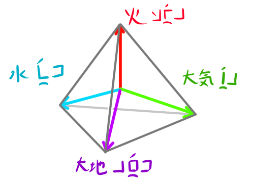

5つの光調
- アクセント -
名詞・形容詞および動詞には光調およびアクセントが存在し、アクセントのある音節には記号が付されます。アクセントはストレスアクセントで周りの音節より強くはっきりと発音されますが、後述の光調があるために無光調言語よりもその差異は曖昧です。
- 光調とは -
光調[léqt:レクト]とは、変調させた魔力を乗せて発声することで意味を識別する言語機能です。光調は本来、東大陸で話されるダリム語族において顕著な特徴であって、ティエセル語が属する西大陸のシトラ語族には元々光調がありませんでした（今でもシトラ語族のほとんどの言語に光調はありません）。しかしティエセルは両大陸の地峡に位置しており、東西の文明が交わる結節点の役割を果たしていたために、ダリム語群の影響を強く受け光調を獲得するに至りました。
- ティエセル語の光調 -
魔力の偏光は通常、三次元逆空間上の方位で表現されます。ティエセル語およびティエセルの一般的な魔術体系ではこの三次元空間に4つの一次従属な基底ベクトルを偏光(sírm:シルム)として定めます。4つのベクトルは正四面体の重心からそれぞれの頂点に向かう方向にとります。これら4つの方角は大地[rúet:リュート]・水[óet：エート]・大気[íer：イエル]・火[fáer：ファエル]と呼び習わされ、すべてを同じ強さで発振する全偏光[péls léqt：ペルスレクト]（光輝[éser：エセル]と呼ばれます）と合わせてティエセル語の5つの光調を形作ります。

- 光調の表記 -
ティエセル語では1つの単語につき1つの光調が付され、アクセント記号を書き分けることでそれを表記します。地・水・気・火・光の5つの光調にはそれぞれ独自のアクセント記号が与えられ、アクセントおよび光調を持たない単語（接続詞や助動詞など）には何も記しません。
| 光調 | 記号 | ラテン転写 |
| 地偏光 | ē,ā,ī,ō,ū | |
| 水偏光 | ě,ǎ,ǐ,ǒ,ǔ | |
| 気偏光 | ẽ,ã,ĩ,õ,ũ | |
| 火偏光 | ê,â,î,ô,û | |
| 全偏光 | é,á,í,ó,ú |
辞書の見出しなど光調が問題にならない場合には便宜的に全偏光の符号を付してアクセント位置を明示します。